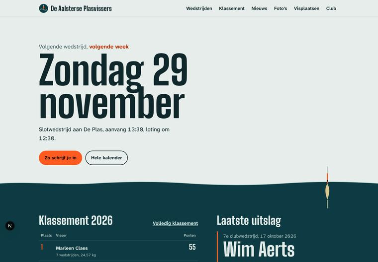
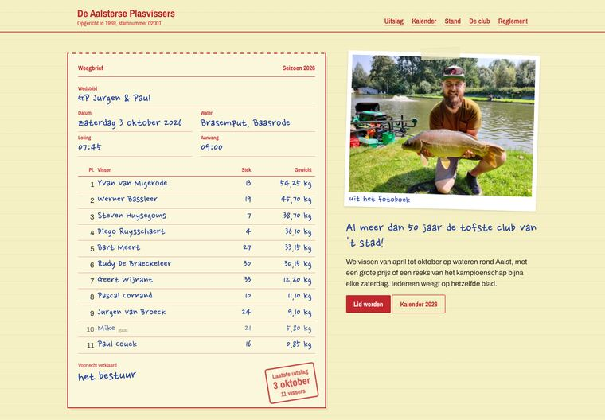
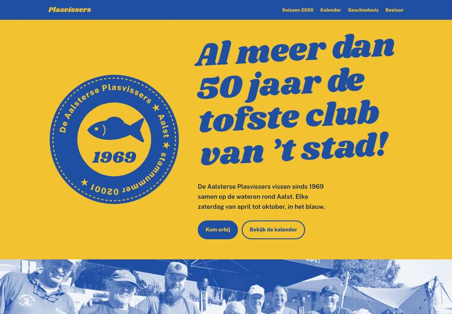
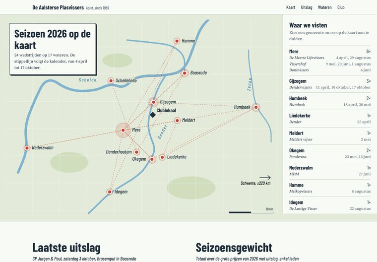

Het huidige ontwerp en drie andere richtingen, allemaal met de echte clubinhoud: de kalender en uitslagen van 2026, het bestuur, de geschiedenis en de voederregels. Het zijn ontwerpvoorstellen om te vergelijken, de werkende site blijft het huidige ontwerp.

Het huidige ontwerpBoven en onder waterMistgrijs en diep water, met een oranje dobber als accent. Rustig en modern, de wedstrijd van de week staat bovenaan.
Voorstel AWeegbriefDe site als het voorgedrukte weegbriefje van de club, ingevuld met balpen. Rode formulierlijnen, handgeschreven namen en gewichten, een stempel op de laatste uitslag.
Voorstel BSinds 1969Een clubaffiche in twee kleuren: het blauw van de overalls en zonnegeel. Clubembleem, podium, koningschap, een tijdlijn sinds 1969 en het clublied om af te spelen.
Voorstel CViskaartHet seizoen op de kaart: alle wateren rond Aalst waar de club vist, de route van de kalender, en per water wat je mag voeren.